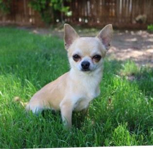

At Clip-N-Clean Dog Grooming Scottsdale, all dogs matter, and no matter what their size, breed or age, they will benefit from regular grooming salon needs. It helps dogs to be happy, healthy and comfortable – and keeps their coat shiny and smooth throughout the year.
Hygiene and Health: Regular grooming helps maintain your dog's hygiene by keeping their coat clean and free from dirt, debris, and parasites like ticks and fleas. It also prevents matting, which can lead to skin irritation and discomfort. Additionally, grooming includes nail trimming, ear cleaning, and dental care, which are essential for your dog's overall health. Comfort and Well-being: Grooming sessions often include massages and gentle handling, which can be soothing and relaxing for your dog. Proper grooming helps prevent skin issues such as hot spots and infections, promoting your dog's comfort and well-being. Improved Appearance: Professional grooming can enhance your dog's appearance by giving them a neat and well-maintained coat. This can boost your dog's confidence and make them feel better about themselves. It also allows you to showcase your dog's breed characteristics and unique features. Socialization and Training: Regular visits to the groomer expose your dog to different people, environments, and situations, which can contribute to their socialization skills. Grooming sessions also provide opportunities for positive reinforcement training, helping your dog learn to tolerate handling and grooming procedures. Preventive Care: Groomers are trained to identify potential health issues such as skin infections, lumps, or abnormalities during grooming sessions. Early detection of such problems allows for timely intervention and treatment, preventing them from escalating into more serious issues. Convenience: Professional groomers have the expertise, tools, and facilities to efficiently groom your dog, saving you time and effort. They can also provide specialized services tailored to your dog's specific needs, such as breed-specific grooming or special coat treatments. Specialized Services: Grooming services often offer additional treatments such as de-shedding, flea and tick baths, and medicated baths for skin conditions. These specialized services can address specific concerns and help keep your dog healthy and comfortable. Overall, a grooming service can be perfect for your dog because it contributes to their physical health, emotional well-being, and overall quality of life. It ensures that your dog looks, feels, and smells great while also addressing any potential health issues proactively.